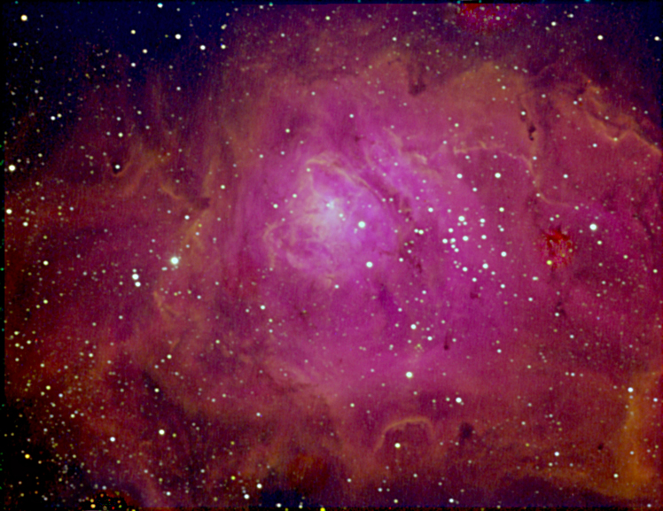

The Lagoon Nebula
Here are higher resolution images of the Lagoon Nebula
|  |
This is an combined image through Hydrogen Alpha, Oxygen III, and Sulfur II filters and combined as red, blue, and green respectively.
|
M8 in Hydrogen Alpha
 |
M8 in Oxygen III
 |
M8 in Sulphur II